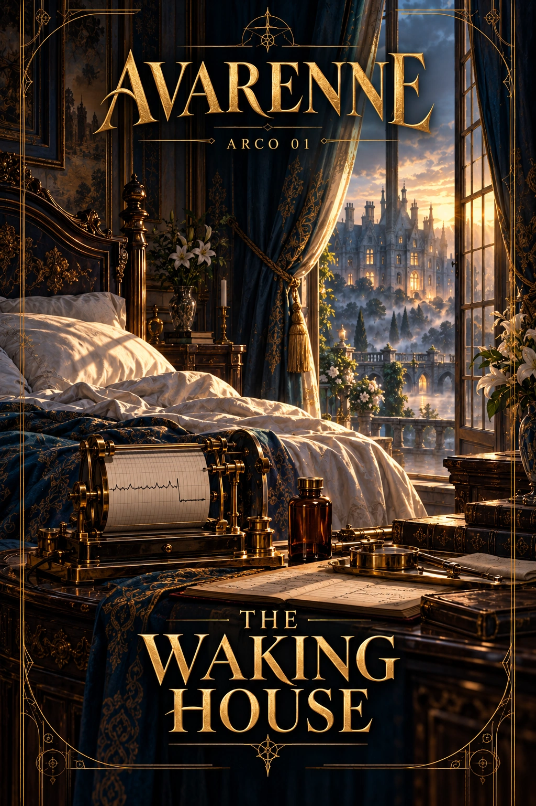

Collegamenti fra le due linee
Linea dominante. ALEXANDER. Questo non impone presenza o alleanza.
Accesso di Alexander. La ripresa del corpo e le responsabilità della casa sono già nella sua sfera.
Accesso di Elias. Prosegue la propria controversia di laboratorio; non conosce il risveglio del duca.
Portatori possibili del contatto. Mirel Osta (CAST-005), Albin Sere (CAST-069). Verificare che siano vivi, raggiungibili e in possesso dei dati necessari; la lista non è una convocazione già avvenuta.
Condizione causale. Nessuna convergenza necessaria. Una notizia sanitaria può uscire solo per una comunicazione realmente autorizzata o avvenuta.
Se non si incontrano. La casa evolve secondo le decisioni del PG; la vicenda del laboratorio procede separatamente.
Calendario pertinente. CLK-05 812-05-26. Le scadenze non aspettano Alexander e non sono ordini di viaggio.
Fronti. FRONT-11. Le iniziative seguono le rispettive date e i bersagli reali; non si ripetono a ogni ricorrenza editoriale.
Stato del ponte. Non inviato e non avvenuto come fatto aggiuntivo. Registrare un eventuale contatto solo quando l’iniziativa viene realmente attivata. Un arco resta utilizzabile anche senza incontro.
Capitoli previsti
38
Ambientazione
Fatti stabiliti
Il ritorno è autentico; i frammenti del Quiet Glass sono spenti. Nessun familiare conosce Edran.
Personaggi coinvolti
Ulteriori dettagli documentati
Volume
1
Independent initiative
Mirel verifica parametri; Nela passa le note; Albin prosegue i pagamenti delegati.
Choice
Esaminare il mezzo, parlare alla famiglia, riprendere il ducato o lasciare la casa.
Evoluzione
Una diagnosi precoce risolve il raccordo e apre la questione della provenienza; ignorarlo conserva i frammenti in custodia ordinaria senza altri ritorni.
Misteri
M01
Opposizioni e iniziative indipendenti
Sviluppi possibili: l’attivazione richiede luogo, informazioni, mezzi e condizioni effettive. Nessuna aggressione rimane inevitabile dopo essere stata impedita.
The Blue Lantern
Verificare una segnalazione di sequestro, preparare trasporto e intervenire contro la squadra identificata.
La rete può essere aiutata con trasporti, protezione, guarigione o informazioni; non pretende adesione religiosa o obbedienza.
Ordine nell’opera
Indice in ordine numerico · Successivo: Arco 2 — The Moved Bench
La numerazione indica l’ordine editoriale; gli esiti della partita e le condizioni di attivazione restano aperti.
Struttura causale utilizzabile
Prove e verifica
Confrontare il tracciato interrotto con visita e frammenti spenti permette di accertare il recupero del corpo senza spiegare la persona. Il pagamento delegato del personale prova una continuità amministrativa, non che la famiglia conoscesse il ritorno.
Iniziativa indipendente
Mirel può chiedere un altro esame; Nela può consegnare le note senza renderle pubbliche. Se Alexander lascia casa, la cartella resta presso chi ne ha custodia e una nuova richiesta deve raggiungerlo realmente.
Diramazioni e conseguenze
Una conversazione privata può aprire il rapporto con Celine; un esame può chiudere il dubbio clinico; riprendere le udienze patrimoniali può affrontare obblighi differenti. Nessuna di queste strade richiede l’incontro con Elias.
Attivazione e mezzi
Nessuna convergenza necessaria. Una notizia sanitaria può uscire solo per una comunicazione realmente autorizzata o avvenuta.
Usare inventari e ubicazioni attuali dei personaggi; il riferimento nell’arco non li trasferisce nel teatro. Applicare tempi di viaggio, riserve e accessi realmente raggiunti.
Da registrare nel checkpoint
- fatti scoperti e da chi
- messaggi spediti/ricevuti
- risorse consumate o acquisite
- decisioni autonome dei PNG
- rapporti modificati
- cause risolte e rischi ancora attivi
- data e luoghi effettivi
Causa della crisi: quadro vigente
La causa della crisi del giovane duca è ridefinita nella revisione 369. Le vecchie affermazioni di suicidio non sono vigenti. Memorie integrali, decesso precedente al ricongiungimento e meccanismo del Quiet Glass sono conservati.
Verità autoriale, prove, sapere individuale e sviluppi aperti.
Raccordo con la successione contesa
Applicare le informazioni, i campioni e gli atti effettivamente ottenuti. Le azioni del responsabile richiedono accesso e notizie ordinarie; nessun familiare conosce automaticamente Edran. Un successo nell’indagine o nella protezione di Celine resta valido senza un mandante cosmico sostitutivo.
Persone e scene oltre la procedura
Una giornata che deve ricominciare
Celine può portare un quaderno invece di una domanda sulla salute. Vuole vedere se nella casa c’è posto anche per qualcosa di ordinario. Il giocatore decide se accoglierla, rimandare o proporre altro; il rinvio può diventare un appuntamento credibile o una delusione, non una fuga obbligatoria.
Il cambio di turno
Nela deve sapere chi prenderà il suo posto. Mirel vuole preservare riposo e osservazione, la casa vuole ricevere visitatori. Si possono concordare tempi senza negare al duca libertà di movimento.
La prima richiesta civile
Albin può presentare una sola questione urgente e lasciare il resto per dopo. Una scelta di priorità rivela a chi dedica attenzione la casa; non richiede di completare ogni fascicolo prima di uscire.
Esiti e continuità
Le scene non devono tutte accadere. Usare personaggi presenti e informazioni raggiunte. Registrare chi ha chiesto cosa, la risposta effettiva, eventuali promesse e come è cambiata la relazione. Non fissare sentimenti, consenso o decisioni del personaggio del giocatore. Se una causa è stata risolta, non riprodurla per raggiungere un numero di capitoli.